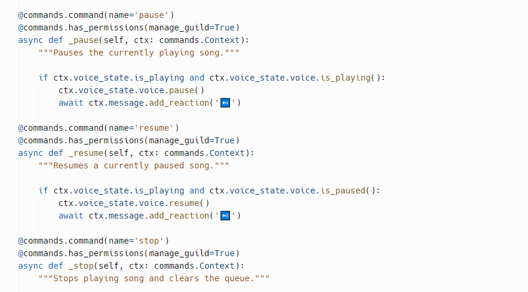
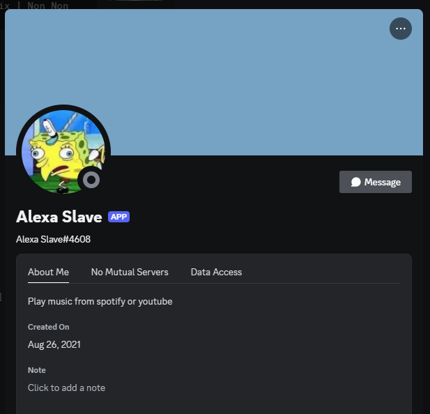
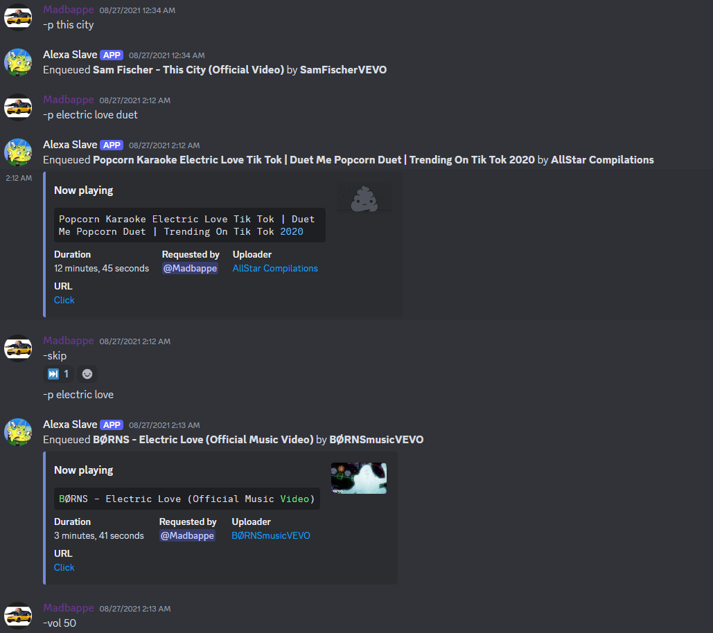
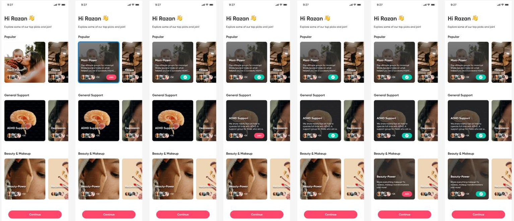
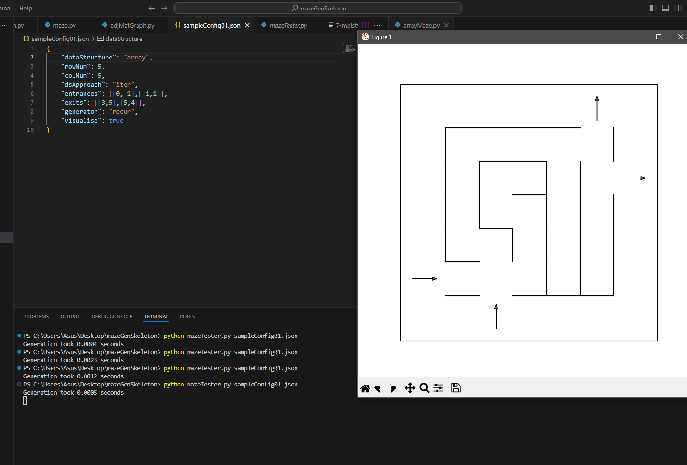

Discord Music Bot
My only personal project. 1 year into covid lockdown and my IT degree, me an my friends found out Discord music bots were getting shut down.
I then decided to make my own one. I found a tutorial online, followed it and made one using Python and Repl.it.
-  Snippet of code
-  Profile of the bot on Discord
-  Using the bot
Web Application
My final year project at RMIT university with a group of 4 other students. We were tasked with developing a segment of the client's social media application. I found this project to be a great learning experience:
- First time working with a client
- Managing my time to fit in team meetings with the client, our course coordinator and our team members
- Learning to work with languages I've never learnt.(Laravel, PHP, Kotlin)
- Learning to work and troubleshoot with a team
- 
2D Maze Generator
This was a project I did as part of a very hard course(i think so) that I took under the advice of a family friend currently working in the IT industry. We were tasked with editing a 2D maze generator using Java.
A github link to the project- 
Data Analytics Project
This was a university project where we needed to develop a Data Analytics Hub using Java. Some of the basic requirements included:
- Users can create profiles with usernames and passwords
- Users can keep a collection of social media posts and analyze them.
- Users can edit their profiles and posts
- Users can perform basic data analytics like sorting by likes
No pictures :(
A github link to the project
Job Sorter
This was a university java project where we needed to develop a job sorter using a bunch of if statements.
A github link to the project
Programming 1 Project
This was a university project where we needed to develop a generic shopping cart but we needed to have the program read the items from a txt file
A github link to the project
Booking Manager
This was a university project where we needed to develop a booking manager using Java.
A github link to the project